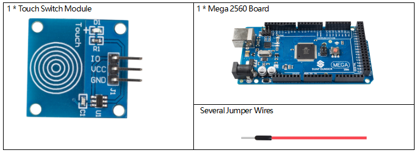
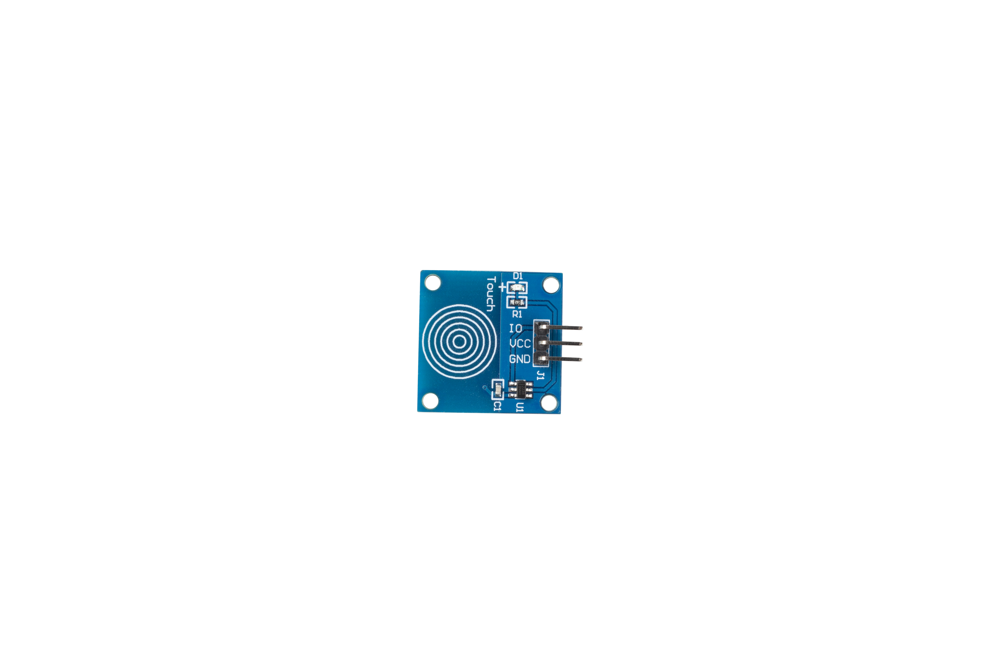
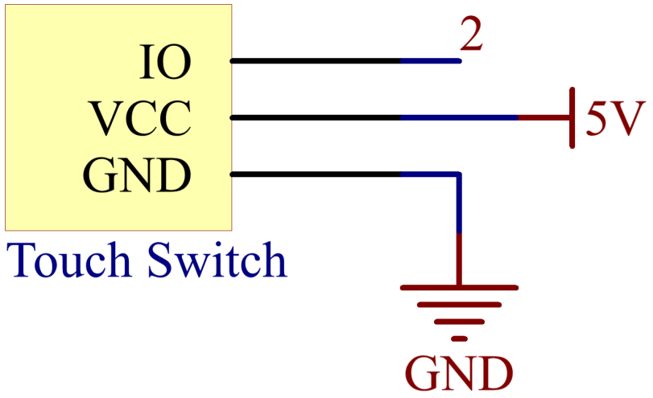

2.18 Berührungsschaltermodul¶
Überblick¶
In dieser Lektion lernen Sie das Touch-Switch-Modul kennen. Es kann die herkömmlichen Schalterarten durch folgende Vorteile ersetzen: bequeme Bedienung, Feinfühligkeit, präzise Steuerung und geringster mechanischer Verschleiß.
Erforderliche Komponenten¶
Komponenteneinführung¶
Das Touch-Switch-Modul erkennt eine Kapazitätsänderung aufgrund des Einflusses eines externen Objekts. Die Touch-Platte ist mit Isoliermaterial bedeckt und der Benutzer kommt nicht mit dem Stromkreis in Kontakt.
Ein kapazitiver Berührungsschalter hat verschiedene Schichten - obere isolierende Frontplatte, gefolgt von Berührungsplatte, einer weiteren isolierenden Schicht und dann Erdungsplatte.
{kind=link}
Tatsächlich kann ein kapazitiver Sensor auf einer doppelseitigen Leiterplatte hergestellt werden, indem eine Seite als Berührungssensor und die andere Seite als Erdungsplatte eines Kondensators behandelt wird. Wenn diese Platten mit Strom versorgt werden, werden die beiden Platten aufgeladen. Im Gleichgewichtszustand haben die Platten die gleiche Spannung wie die Stromquelle.
Die Berührungsdetektorschaltung hat einen Oszillator, dessen Frequenz von der Kapazität des Touchpads abhängt. Wenn ein Finger in die Nähe des Touchpads bewegt wird, bewirkt eine zusätzliche Kapazität, dass sich die Frequenz dieses internen Oszillators ändert. Die Detektorschaltung verfolgt die Frequenz des Oszillators in einem bestimmten Zeitintervall, und wenn die Verschiebung die Schwellenwertänderung überschreitet, löst die Schaltung ein Tastendruckereignis aus.

Fritzing Circuit¶
In diesem Beispiel wird Pin 2 zum Lesen des Signals des Touch Switch-Moduls verwendet.

Schematische Darstellung¶
{kind=link}
Code¶
Wenn Sie die Codes auf die Mega2560-Karte hochgeladen haben, werden die Messwerte der Pins auf dem seriellen Monitor angezeigt.
Wenn Ihre Fingerspitze das Touch-Schaltermodul berührt, wird 「1」 auf dem seriellen Monitor angezeigt. und wenn Sie Ihren Finger entfernen, wird 「0」 angezeigt. Für die ausführliche Code-Erklärung müssen Sie sich an wenden Teil 1- 1.4 Digitales Lesen.
Phänomen Bild¶